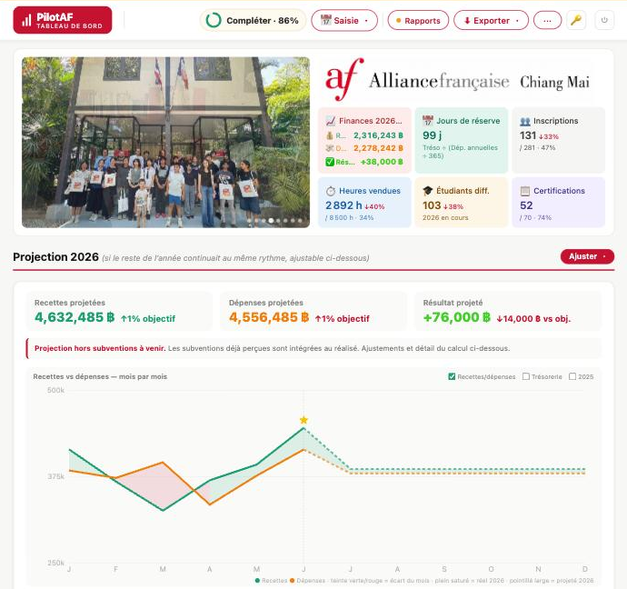
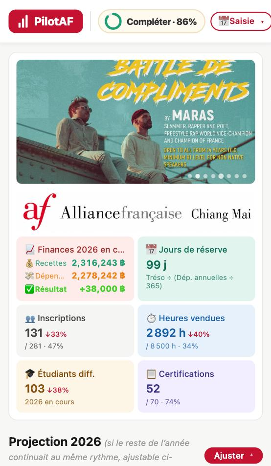
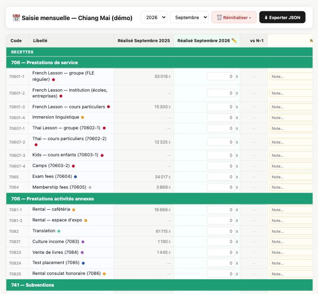
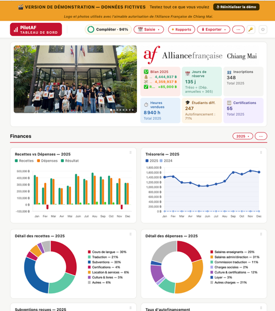
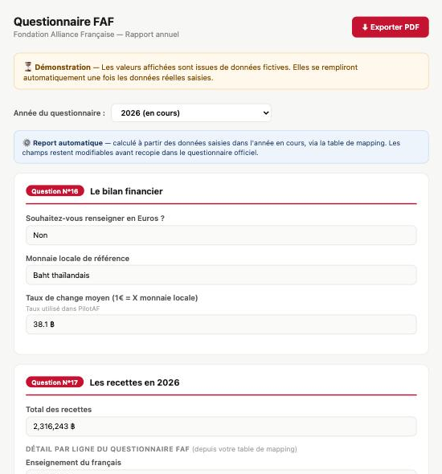
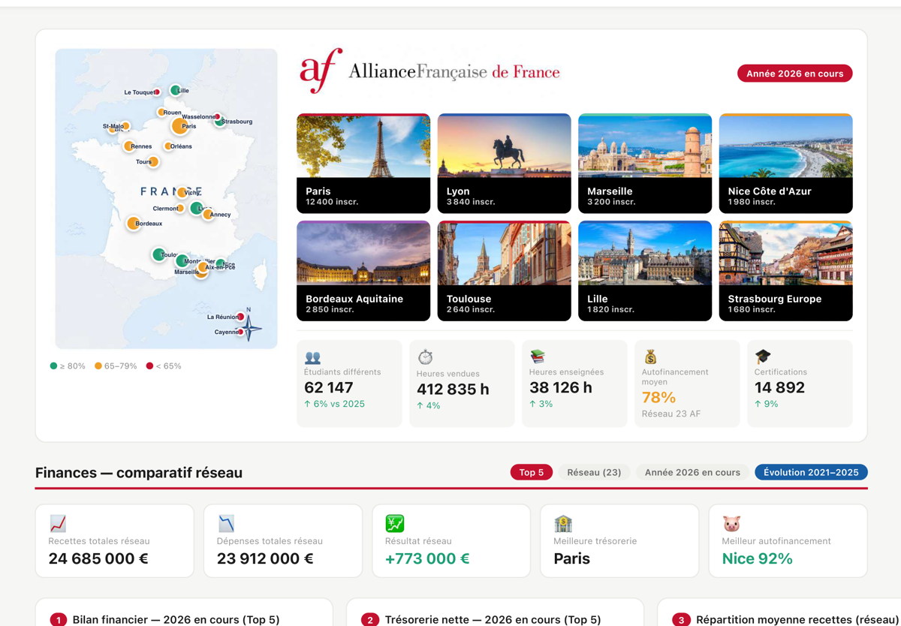

L'outil et les standards
Ce qu'est PilotAF, sur quels référentiels il s'appuie (Fondation, MEAE), et ce qu'il change dans la gestion d'un établissement. Avec captures d'écran libres d'usage.
Pour les directions d'Alliance Française et d'Institut français
PilotAF est le logiciel de pilotage financier des Alliances Françaises et des Instituts français, conçu par un ancien directeur d'Alliance. Budget prévisionnel, scénarios, rapports pré-remplis, sur ordinateur et sur téléphone.


Démonstration avec des données fictives, image de l'AF de Chiang Mai avec son autorisation. Sur ordinateur et sur téléphone, en français et en anglais.
Hébergées en France, séparées de l'application. L'Alliance choisit ce qui remonte à la coordination, ligne par ligne.
Tout l'historique, sur autant d'années que vous voulez, et les budgets restent dans l'établissement quand la direction change.
Export complet en PDF et CSV à tout moment. Vos données sortent aussi facilement qu'elles sont entrées.
Comment ça marche
Cinq écrans suffisent à comprendre le logiciel. Le troisième se manipule : essayez.
La comptabilité locale garde ses codes et ses intitulés. Chaque ligne est reliée une fois pour toutes aux catégories de la Fondation et du ministère : c'est la seule porte d'entrée des données, et il n'y a rien d'autre à ressaisir ensuite.
Résultat : un historique propre, comparable d'une année à l'autre
Trésorerie en jours de réserve, taux d'autofinancement, inscriptions, heures vendues, certifications, et la projection de fin d'année si le reste de l'année continue au même rythme.
Résultat : savoir en juin comment l'année finira
Déplacez le curseur. La courbe se redessine et le résultat de fin d'année change sous vos yeux. C'est ce que le directeur fait avant de décider : prix des cours, subvention en retard, masse salariale, loyer.
Les questions 16, 17 et 18 du questionnaire annuel FAF se remplissent depuis la saisie mensuelle. La fiche pays MEAE, le rapport de conseil d'administration et l'export Excel ou PDF sortent du même endroit.
Résultat : des heures de ressaisie rendues à l'équipe chaque année
Pour un coordinateur national ou régional : la carte des Alliances, les indicateurs consolidés, le comparatif financier entre établissements, l'évolution sur plusieurs années. C'est la version faite pour un PAF national ou sous-régional.
Chaque Alliance décide de ce qui remonte, ligne par ligne. Une Alliance qui ne souhaite rien partager garde une version entièrement étanche.
Résultat : un réseau piloté avec les mêmes chiffres, sans tableur consolidé à la main
Vous montez un dossier PAF 2027 ?
Votre projet couvre bien plus que la gestion. Pour la partie qui concerne PilotAF, nous vous envoyons des paragraphes prêts à coller dans votre dossier, dans le vocabulaire de l'appel, adaptés à votre réseau.
Ce qu'est PilotAF, sur quels référentiels il s'appuie (Fondation, MEAE), et ce qu'il change dans la gestion d'un établissement. Avec captures d'écran libres d'usage.
Budget prévisionnel produit et suivi chaque mois, taux d'autofinancement et cofinancements suivis, rapports Fondation, MEAE et CA générés sans ressaisie.
Hébergement en France, RGPD, sauvegardes, maîtrise des données par l'établissement. Et la ligne budgétaire : mise en route, prise en main, abonnement.
Votre projet, vos établissements, la place que le pilotage y prend.
Avec vos établissements et vos chiffres, prêts à relire et à coller.
Sur l'Espace Réseau, en votre nom, avec le reste de votre projet.
Pour laisser une semaine de relecture à votre coordination et à votre COCAC, nous vous proposons un premier échange avant le 15 octobre.
Déjà en service
« Beaucoup d'Alliances commencent l'année sans savoir où elles vont. Le budget prévisionnel n'est pas un rapport de plus, c'est ce qui permet de dire non à temps. »Sylvain, à l'origine de PilotAF

Ancien directeur d'Alliance Française (Bangkok, Odessa) et coordinateur national en ambassade pendant plus de dix ans. A participé à l'élaboration de la démarche qualité du ministère. Il a écrit PilotAF pour son propre pilotage avant de l'ouvrir au réseau.

Deux ans en Alliance Française à Bangkok, aujourd'hui en marketing et communication. Elle accompagne les établissements dans la prise en main et le déploiement.
Les questions que l'on nous pose
Les données de chaque établissement sont hébergées en France, dans une base séparée de l'application, sauvegardée chaque jour, conforme au RGPD. La saisie mensuelle est la seule porte d'entrée : rien ne se connecte à votre banque ni à votre logiciel comptable sans vous.
C'est l'établissement qui choisit ce qui remonte au niveau national, ligne par ligne. Une version entièrement étanche existe pour une Alliance qui ne souhaite pas partager. À l'intérieur d'un établissement, chaque profil a son niveau d'accès.
Vous exportez tout, à tout moment, en PDF et en CSV : l'historique, les budgets, les rapports. Vous n'êtes pas prisonnier du logiciel.
Sur ceux de la Fondation des Alliances Françaises et du ministère : mêmes catégories, mêmes modes de calcul, mis à jour quand leurs questionnaires évoluent. C'est ce qui permet de pré-remplir le questionnaire annuel et la fiche pays.
En ligne, sur ordinateur et téléphone, en français et en anglais, d'autres langues à la demande. Une assistance est comprise pendant la mise en route, puis selon la formule choisie.
C'est le comité de l'Institut français qui en décide. Ce que nous fournissons : des paragraphes écrits dans le vocabulaire de l'appel, avec des indicateurs mesurables, et un outil qui tourne déjà dans des Alliances.
Parlons-en
Répondez simplement à notre message, ou écrivez-nous à l'adresse ci-contre. Nous revenons vers vous sous 24 heures.